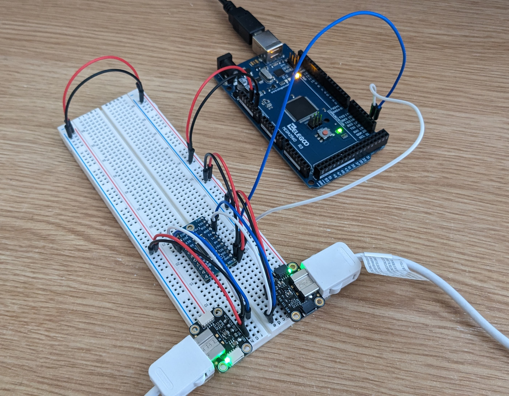
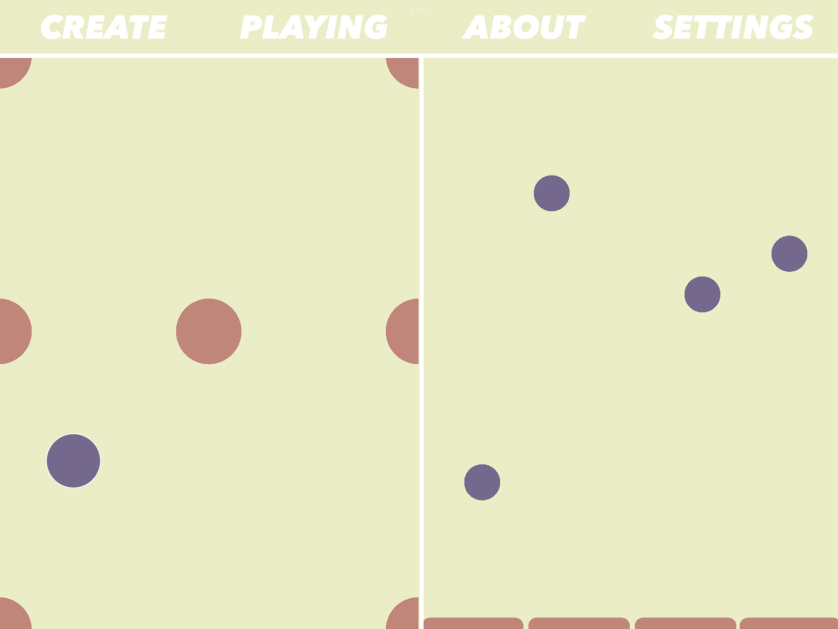

Front-End Developer with an Engineering Mindset
Hi! I'm a front-end developer with a background in electronic engineering and audio technology.
Hi! I'm a front-end developer with a background in electronic engineering and audio technology.


Unwind Chimes is an interactive web app that creates random, evovling chord progressions and relaxing soundscapes using physics based simulations powered by Matter.js.
It employs the Karplus-Strong plucked string algorithm to generate audio in the browser via the Web Audio API.

Stringtendo.js is a digital instrument I created for my final year BEng project at university. Joystick and accelerometer data is sent to the broswer using an Arduino microcontroller via the Web Serial API where it is sonified using the Tone.js library.
The main purpose of the project was to investigate the cause of the poor sound quality of Tone.js's PluckSynth module. Although I was able to implement an improvement in my code, submitting a pull request was not possible due to the problem FeedbackCombFilter module having other dependencies.

clum.sy is another interactive music app built for iPads in Swift as part of my iOS Audio Programming module at university. The app is essentially a precursor to Unwind Chimes and functions very similarly, though it uses samples instead of synthesised audio.